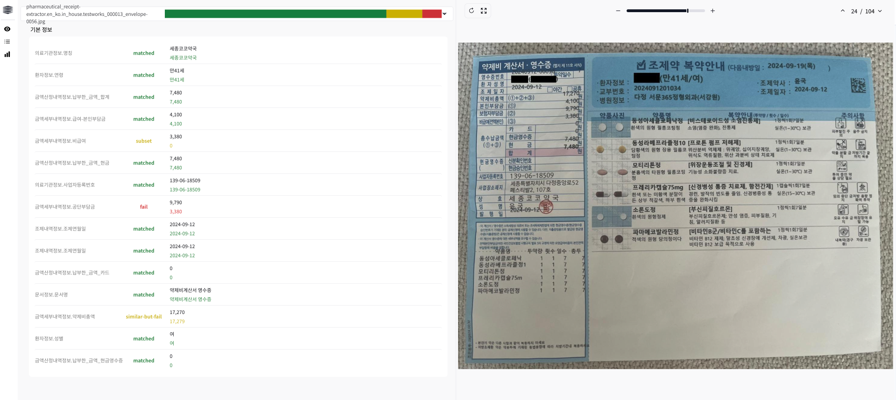

모델 정기점검(유지보수) 표준 프로세스. 티켓 생성부터 출장, 채점, 리포트까지 전 과정을 체크리스트로 관리합니다.
| 단계 | 고객사 요청 | AIMP 작업 |
|---|---|---|
| 1. 초기 요청 | 모델당 30장 이미지 (일반 분포) | — |
| 2. 사전 스크리닝 | — | Edge-case 검토 후 문제 이미지 반려 |
| 3. 1차 테스트 | 고객사에서 채점 | KPI 채점 |
| 4. KPI 미달 시 | — | 추가 채점 (최대 50장까지) |
| 5. 채점 주체 | 기본: 고객사 직접 / 예외: 모델러 | 사전 합의 필요 |
host.docker.internal 등) 점검/mbr) 확정 & 문서화| 순서 | 작업 | 상세 |
|---|---|---|
| 1 | 환경 세팅 · 패키지 설치 | DocAI Kit, Validator 등 |
| 2 | Validator로 1차 10장 추론 · 채점 | 고객사 대상 현장/영상 교육 & 주의사항(후처리 범위 · KPI) 재확인 |
| 3 | KPI 달성 여부 판단 | 필요 시 10장씩 추가 테스트 (최대 50장) |
| 4 | 데이터 Export | 가능: 결과 파일 반출 후 사외 리포트 / 불가: 전부 수기 기록 |

| 시나리오 | 대응 |
|---|---|
| 전수 조사 | 모델러가 채점 결과 전수 검사 → 오채점 설명 & 수정 → KPI 재측정 |
| 추가 테스트 | 10장씩 추가 채점 (50장까지). 확률 모수로 프로세스 설득 |
| 추가 테스트 실패 (2차 사업 O) | 2차 사업 모델에 포함하여 협상 |
| 추가 테스트 실패 (2차 사업 X) | 모델 재개발 |
| 아슬아슬한 차이 (0.1~1점) | 인터페이스 변경 없이 베스트 이미지 추가로 점수 보완 제안 |
| 구분 | 처리 |
|---|---|
| 개인정보 無 | Dev/PM 통해 직접 반출 |
| 개인정보 有 | 이미지 마스킹(마스커 모델) + JSON 마스킹(코드) 후 반출 |
ontology-short 확인 필수| 확인 항목 | 내용 | 비고 |
|---|---|---|
| 방문 일정 | DevOps 동행 여부 포함 | |
| 테스트셋 준비 요청 | 모델당 30~50장 | |
| 테스트셋 확인 여부 | Edge case 반려 포함 | |
| 채점 방식 | 고객사 직접 vs 모델러 | |
| 개발/운영망 접근 | 계정, 포트, PC | |
| 결과 반출 가능 여부 | 개인정보 포함 시 마스킹 |